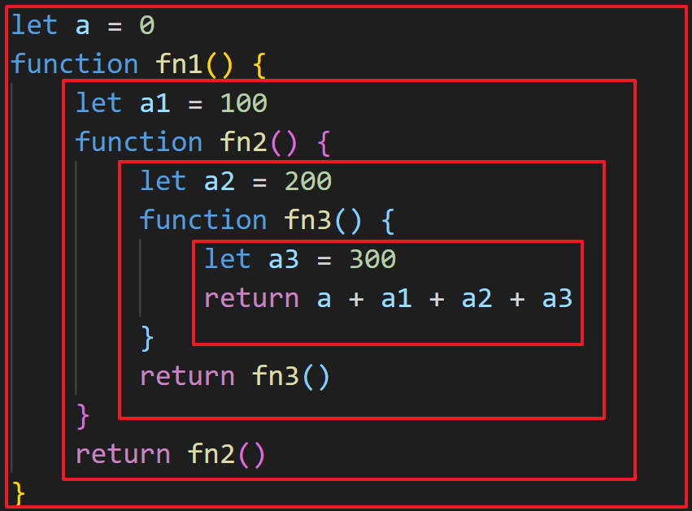

三座大山之二
作用域
1 2 3 4 5 if (true ) { let x = 100 } console .log(x)
自由变量
一个变量没有被当前作用域定义，但被使用了
向上级作用域，一层一层依次寻找，直到找到为止
如果到全局作用域都没找到，则报错 xx is not defined

如上图，a、a1、a2 都是自由变量，a3则是在当前函数作用域下定义过
闭包 其实是作用域应用的特殊情况，有两种表现:
1 2 3 4 5 6 7 8 9 10 11 function create ( const a = 100 return function ( console .log(a) } } const fn = create()const a = 200 fn()
1 2 3 4 5 6 7 8 9 10 11 function print (fn ) const a = 200 fn() } const a = 100 function fn ( console .log(a) } print(fn)
总结：所有的自由变量的查找，是在函数定义的地方向上级作用域查找，不是在执行的地方！
this
作为全局下普通函数的调用者
使用 call、apply、bind 调用
作为对象方法被调用
在 class 方法中调用
在箭头函数中调用
切记，this 在上面场景中取什么样的值，是在函数执行的时候确认的，不是在定义的时候确认的
1 2 3 4 5 6 7 8 9 function fn1 ( console .log(this ) } fn1() fn1.call({ x : 100 }) const fn2 = fn1.bind({ x : 200 }) fn2()
1 2 3 4 5 6 7 8 9 10 11 12 13 const zs = { name: '张三' , sayHi ( console .log(this ) }, wait ( setTimeout (function ( console .log(this ) }, 100 ) } }
1 2 3 4 5 6 7 8 9 10 11 12 13 14 const zs = { name: '张三' , sayHi ( console .log(this ) }, waitAgain ( setTimeout (() => { console .log(this ) }) } }
1 2 3 4 5 6 7 8 9 10 11 12 class People constructor (name ) this .name = name this .age = 20 } sayHi ( console .log(this ) } } const zs = new People("张三" )zs.sayHi()
问题 this 不同应用场景如何取值
作为普通函数调用（包括立即执行函数），this 指向 window
使用 call、apply、bind 调用，传入什么 this 就指向的是什么
在对象方法中调用，如果有 settimeout 则 this 指向 window ，若无 settimeout ，则指向当前对象本身
在箭头函数中的 this 取上级作用域的 this 的值
在 class 方法中调用 this ，则指向实例本身
手写 bind 函数 1 2 3 4 5 6 7 8 9 10 11 12 13 14 15 16 17 18 19 20 21 22 23 24 25 26 27 28 29 30 31 32 33 34 35 36 37 38 39 40 41 42 43 44 45 46 47 48 49 Function .prototype.myBind = function ( const args = [...arguments] const t = args.shift() const self = this return function ( return self.apply(t, args) } } function fn1 (a, b, c ) console .log('this' , this ) console .log(a, b, c) return 'this is fn1' } const fn2 = fn1.myBind({ x : 100 }, 10 , 20 , 30 )const res = fn2()console .log(res)
手写 call 函数 1 2 3 4 5 6 7 8 9 10 11 12 13 14 15 16 17 18 19 20 21 22 23 24 25 Function .prototype.myCall = function ( const args = [...arguments] const t = args.shift() const self = this const result = self.apply(t, args) console .log(self) return result } function a (a, b, c ) console .log("this" , this ) console .log(a, b, c) } a.myCall({ a : 100 }, 1 , 2 , 3 )
1 2 3 4 5 6 7 8 9 10 11 12 13 14 15 16 17 18 19 20 21 Function .prototype.myCall = function ( const flag = arguments .length >= 2 && arguments [0 ] instanceof Object const args = [...arguments] let t if (flag) t = args.shift() const self = this const result = self.apply(t, args) return result } function a (a, b, c ) console .log("this" , this ) console .log(a, b, c) } a.myCall(1 , 2 , 3 )
手写 apply 函数 1 2 3 4 5 6 7 8 9 10 11 12 13 14 15 16 17 18 19 20 21 22 23 24 25 26 Function .prototype.myApply = function ( const that = this const args = [...arguments] const self = args.shift() const result = that.call(self, ...args[0 ]) return result } function foo (a, b ) console .log(this ) console .log(a, b) } foo.myApply({ x : 300 }, [1 , 2 ])
注：Symbol 生成一个全局唯一的值
三兄弟区别
三兄弟接收的第一个参数都是要绑定的 this 指向
apply 的第二个参数是一个参数数组，call 和 bind 的第二个及之后的参数作为函数实参按顺序传入
bind 不会立即调用，其他两个会立即调用
实际开发中闭包的应用
隐藏数据
1 2 3 4 5 6 7 8 9 10 11 12 13 14 15 16 17 18 19 function createCache ( const data = {} return { set: function (key, value ) data[key] = value }, get: function (key ) return data[key] }, } } const c = createCache()c.set("a" , 100 ) console .log(c.get("a" ))
1 2 3 4 5 6 7 8 9 10 11 12 let afor (let i = 0 ; i < 10 ; i++) { a = document .createElement("a" ) a.innerHTML = i + "<br>" a.addEventListener("click" , function (e ) e.preventDefault() alert(i) }) document .body.appendChild(a) }
或者也可使用立即执行函数来实现。